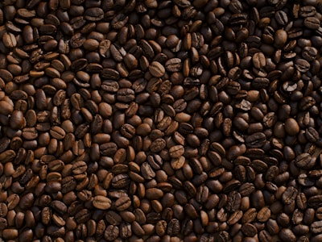
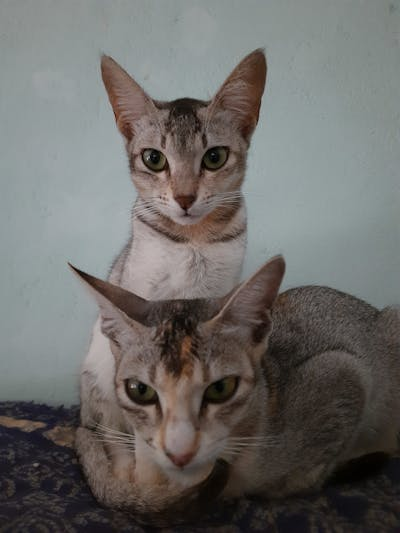
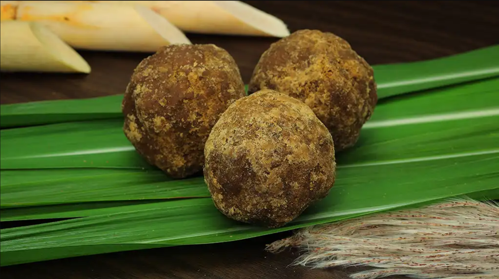
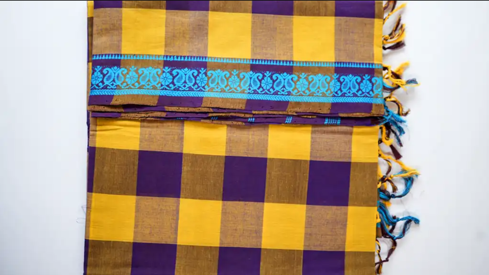
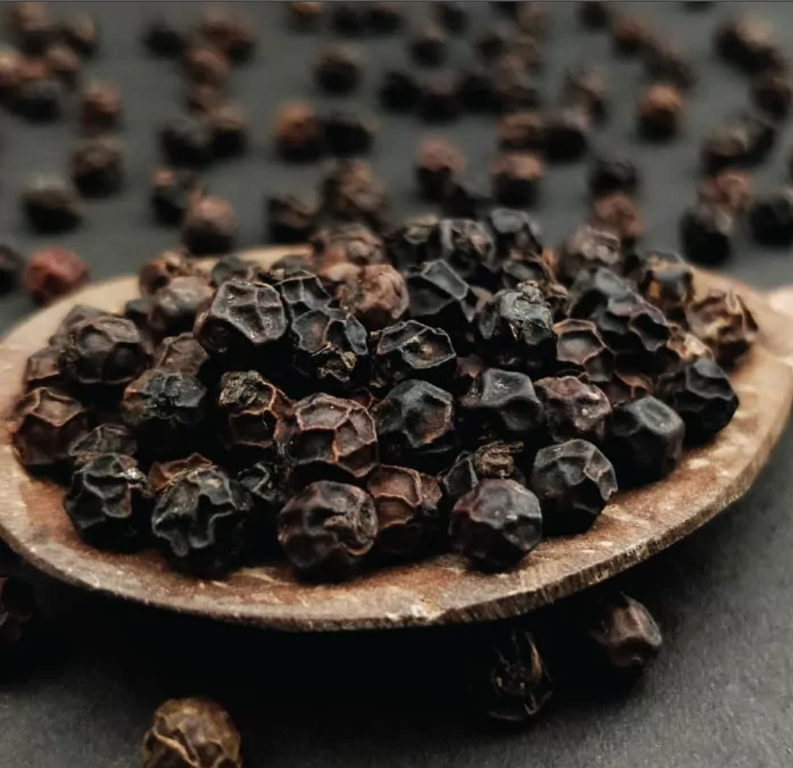
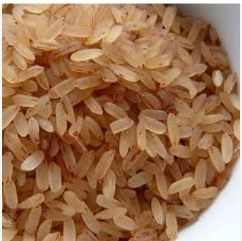
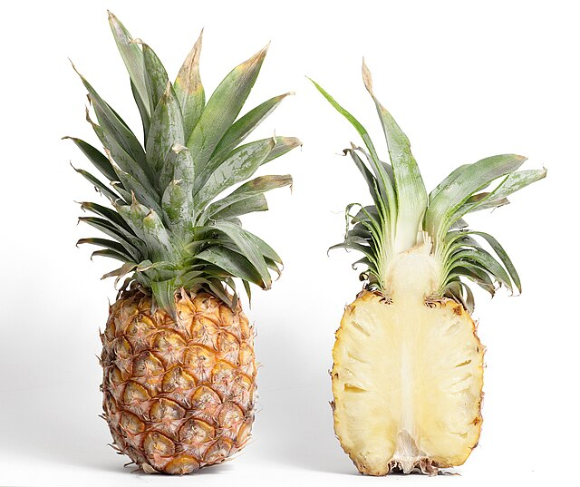
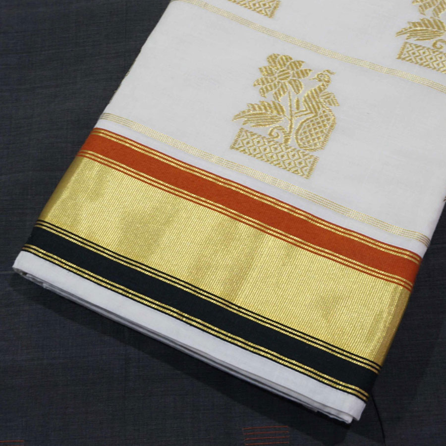
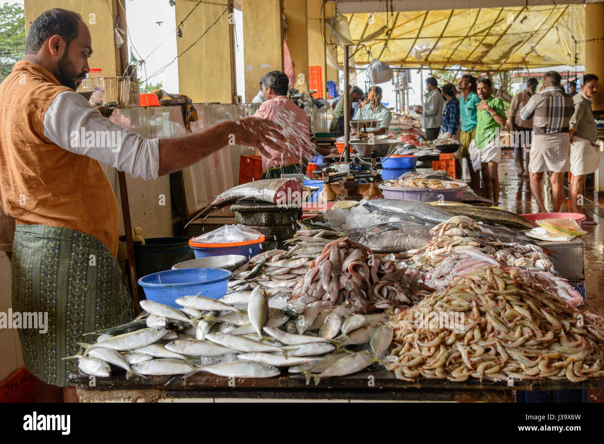

Alleppey Coir

Origin: Alappuzha (Alleppey), Kerala
Description: Alleppey Coir is renowned for its superior quality and is extracted from coconut husks grown in the backwaters of Alappuzha. The unique saline water and climatic conditions of this region produce coir fibers that are exceptionally strong, durable, and golden in color.
Uses: Used in making ropes, mats, mattresses, and various eco-friendly products. Highly valued in international markets for its quality.
GI Tag Year: 2008
Source: Geographical Indications Registry, Government of India
Wayanad Robusta Coffee
Origin: Wayanad District, Kerala
Description: Wayanad Robusta Coffee is grown in the high-altitude regions of Wayanad, characterized by its rich aroma, full body, and low acidity. The unique soil and climatic conditions of the Western Ghats impart distinctive flavor notes.
Characteristics: Dark roasted beans with chocolatey undertones, strong caffeine content, and excellent crema formation. Preferred for espresso blends.
GI Tag Year: 2006
Source: Coffee Board of India / GI Registry
Pokkali Rice
Origin: Ernakulam, Thrissur, and Alappuzha districts, Kerala
Description: Pokkali is a unique saline-tolerant rice variety cultivated in the waterlogged coastal regions of Kerala. It is organically grown in a saline-resistant ecosystem where rice is alternated with prawn/fish farming.
Unique Features: Can withstand salinity up to 3%, naturally pest-resistant, rich in nutrients, and has a distinctive taste. Considered one of the most sustainable farming practices.
GI Tag Year: 2007
Source: Kerala Agricultural University / GI Registry
Aranmula Kannadi (Metal Mirror)
Origin: Aranmula, Pathanamthitta District, Kerala
Description: Aranmula Kannadi is a unique handmade metal-alloy mirror, rather than a glass mirror. This 500-year-old craft is a closely guarded secret, passed down through generations of a single family of artisans.
Unique Features: Made from a special alloy of copper and tin, it is front-reflecting (unlike glass mirrors which are back-reflecting), providing distortion-free reflection. Each mirror is handcrafted and takes several months to complete.
Cultural Significance: Considered auspicious and is often gifted during weddings and special occasions.
GI Tag Year: 2004
Source: GI Registry / Kerala State Handicrafts
Balaramapuram Sarees and Fine Cotton Fabrics
Origin: Balaramapuram, Thiruvananthapuram, Kerala
Description: These are traditional handloom cotton sarees known for their fine texture, vibrant colors, and kasavu (golden border). The weaving technique has been practiced for over 200 years.
Features: Lightweight, comfortable in tropical climate, elegant designs with temple motifs and nature-inspired patterns.
GI Tag Year: 2008
Central Travancore Jaggery
Origin: Pathanamthitta, Alappuzha, and Kottayam districts, Kerala
Description: Traditional unrefined sugar made from coconut palm sap. The unique soil and climatic conditions of Central Travancore produce jaggery with distinctive taste and aroma.
Health Benefits: Rich in iron, minerals, and antioxidants. Used extensively in Ayurvedic preparations and traditional Kerala cuisine.
GI Tag Year: 2011
Kasaragod Sarees
Origin: Kasaragod District, Kerala
Description: Traditional handloom cotton sarees with distinctive checks and stripes pattern, similar to Ilkal sarees but with unique local characteristics.
Features: Known for durability, comfort, and traditional designs that reflect the cultural heritage of North Kerala.
GI Tag Year: 2013
Malabar Pepper
Origin: Malabar region (Kozhikode, Kannur, Kasaragod), Kerala
Description: Known as "Black Gold," Malabar Pepper is famous worldwide for its strong aroma, pungency, and high essential oil content. The spice that once drew traders from across the world to India's shores.
Characteristics: Bold, robust flavor with citrusy notes. Contains 2-4% essential oils and high piperine content.
GI Tag Year: 2006
Palakkadan Matta Rice
Origin: Palakkad District, Kerala
Description: Palakkadan Matta Rice is a unique red rice variety grown in the Palakkad district. Known for its distinctive reddish-brown color, nutty flavor, and high nutritional value.
Characteristics: Rich in fiber, vitamins, and minerals. Has a unique taste and aroma, and is considered healthier than regular white rice.
GI Tag Year: 2013
Vazhakulam Pineapple
Origin: Vazhakulam, Ernakulam District, Kerala
Description: Vazhakulam Pineapple is known for its exceptional sweetness, low acidity, and unique flavor. The fruit has a golden yellow color and is highly aromatic.
Characteristics: High sugar content (16-19 Brix), low fiber, excellent shelf life, and distinctive taste that sets it apart from other pineapple varieties.
GI Tag Year: 2009
Kuthampully Saree
Origin: Kuthampully, Thrissur District, Kerala
Description: Kuthampully sarees are traditional handloom silk and cotton sarees known for their intricate designs and rich kasavu (golden) borders. These sarees represent the cultural heritage of Kerala.
Features: Fine weaving, traditional motifs, elegant designs, and the characteristic golden border that makes them perfect for special occasions and festivals.
GI Tag Year: 2013
Kannur Fish
Origin: Kannur District, Kerala
Description: Kannur fish refers to the unique varieties of fish caught in the coastal waters of Kannur, known for their exceptional taste and freshness due to the pristine marine environment.
Characteristics: Fresh catch from Arabian Sea, processed using traditional methods, and known for superior quality and taste.
GI Tag Year: 2015